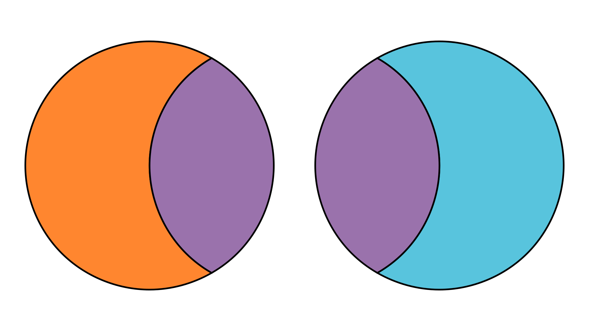
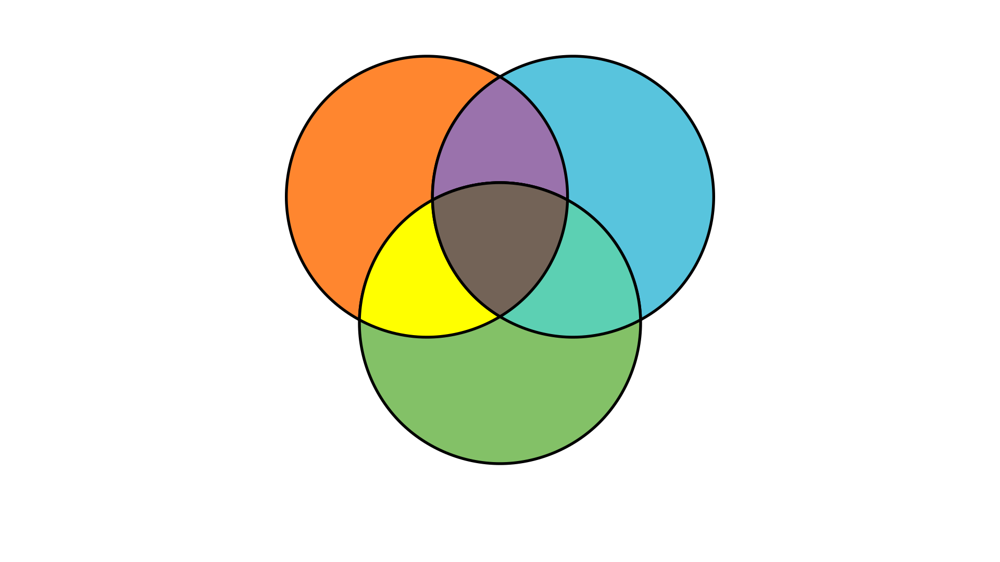

Inclusion-Exclusion and Counting Partitions#
⎕IO←1
The topic of this section will be counting surjective functions, but we need to build up some more tools before we can do that.
The Inclusion-Exclusion Principle#
Say we have two sets \(a\) and \(b\), and we want to know the size of their union. Of course, it’s easy to just calculate this for specific examples:
a←'🍎🍌🍊🍐🍇🥑🫑'
b←'🍄🥕🫑🧅🥑'
a∪b
≢a∪b
🍎🍌🍊🍐🍇🥑🫑🍄🥕🧅
10

If we add together the sizes of the two sets, we are overcounting relative to their union, as we’re counting their intersection twice.

Therefore, the size of the union of two sets is the sum of their individual sizes, minus the size of the overcounted intersection:
≢a∪b ←→ (≢a)+(≢b)-≢a∩b
We can apply the same logic when we have three sets.

We’re still counting the pairwise intersections twice each. When we subtract the sizes of the extra pairwise intersections, we end up subtracting the size of the intersection of all three sets three times over. Since this intersection appeared three times in the original sum (once in each set), this means we have uncounted all of the elements in the intersection of all three sets, so we need to add it back in. This gives us:
≢a∪b∪c ←→ (≢a)+(≢b)+(≢c)+(-≢a∩b)+(-≢a∩c)+(-≢b∩c)+≢a∩b∩c
The pattern emerging here is that we add the individual set sizes, substract the pairwise intersection sizes, add the triple-wise intersection sizes, subtract the quadruple-wise intersection sizes, and so on. This pattern gives us the principle of inclusion and exclusion: given a set \(a\) of sets a[1] through a[n] where n≡≢as:
p←a⊂⍤/⍨⍤1⍉2⊥⍣¯1⍳¯1+2*≢a ⍝ all non-empty subsets of a
⍝ ┌───────┬─sizes of the intersections of all the sets in subsets
≢⊃∪/a ←→ +/(¯1*1+≢¨p)×{≢⊃∩/⍵}¨p
⍝ └─────────┴─subtract if there are an even number of subsets, else add
In traditional mathematical notation, this is written as
Let’s see this in action:
a←'ABC' 'CDEF' 'DEFG' 'FG'
⊃∪/a
≢⊃∪/a
⍪p←a⊂⍤/⍨⍤1⍉2⊥⍣¯1⍳¯1+2*≢a
+/(¯1*1+≢¨p)×{≢⊃∩/⍵}¨p
ABCDEFG
7
FG DEFG DEFG FG CDEF CDEF FG CDEF DEFG CDEF DEFG FG ABC ABC FG ABC DEFG ABC DEFG FG ABC CDEF ABC CDEF FG ABC CDEF DEFG ABC CDEF DEFG FG
7
To prove that this is true, consider any element \(x\) of ⊃∪/a. Let \(b\) be the subset of \(a\) which contains only the sets which contain \(x\).
⍝ for example
x←'F'
⊢b←(x∊¨a)/a
CDEF DEFG FG
In the inclusion-exclusion formula, \(x\) is counted once for each odd-sized subset of \(b\), and uncounted once for every even-sized subset of \(b\).Therefore, we have the following for \(m\), the number of times \(x\) is counted:
t←≢b
m←+/(1!t) (-2!t) .. ((¯1*1+t)×t!t)
By the binomial theorem (see here), we have
0 ←→ (1-1)*t
←→ +/(0!t) (-1!t) .. ((¯1* t)×t!t)
←→ (0!t)++/(-1!t) .. ((¯1* t)×t!t)
←→ (0!t)-+/( 1!t) .. ((¯1*1+t)×t!t)
←→ (0!t)-m
Since 1 ←→ 0!t, \(m\) must be equal to \(1\), so \(x\) is counted only once in the inclusion-exclusion formula.
Derangements#
To see a use of the principle of inclusion and exclusion, let’s take a look at another counting problem.
A derangement is a permutation where no element stays in its original position.
a←1 2 3 4 5
b←4 1 2 5 3
c←3 1 5 4 2
a=b ⍝ b is a derangement of a, no elements in the same place
a=c ⍝ c is not a derangement of a, 4 is in the same place
0 0 0 0 0
0 0 0 1 0
How many derangements are there of \(n\) elements?
We already know that there are !n permutations of \(n\) elements. Let \(s\) be the set of sets such that s[k] is the set of permutations which fix the \(k\)th object in place. There will be !n-1 permutations in this set, since one object is no longer free to move.
⍝ for example
n←3
s←⍬
s,←⊂(1 2 3) (1 3 2) ⍝ permutations which fix 1
s,←⊂(1 2 3) (3 2 1) ⍝ permutations which fix 2
s,←⊂(1 2 3) (2 1 3) ⍝ permutations which fix 3
⍪s
1 2 3 1 3 2 1 2 3 3 2 1 1 2 3 2 1 3
The set of derangements of \(n\) elements is the set of permutations of \(n\) elements, without the union of sets in \(s\).
p←(1 2 3) (1 3 2) (2 1 3) (2 3 1) (3 1 2) (3 2 1) ⍝ all permutations of 3 elements
p~⊃∪/s ⍝ derangements of 3 elements
2 3 1 3 1 2
So, if we want to count the derangements of \(n\) elements (and we don’t want to generate them all to do it), we would take the number of permutations of \(n\) elements (!n), and subtract the number of permutations which fix at least one object (≢⊃∪/s).
The intersection of any \(i\) sets in \(s\) will fix \(i\) objects, and therefore will have !n-i elements. There are i!n ways to pick \(i\) sets from \(s\).
This gives us all the information we need to use the principle of inclusion and exclusion find ≢⊃∪/s. Rather than summing over all subsets of \(s\), we can group together the subsets into those of the same size. For all \(i\), the total size of subsets of \(s\) which have size \(i\) is (i!n)×!n-i.
n←≢s
p←s⊂⍤/⍨⍤1⍉2⊥⍣¯1⍳¯1+2*n ⍝ all nonempty subsets of s
≢⊃∪/s ←→ +/(¯1*1+≢¨p)×{≢⊃∩/⍵}¨p
←→ +/(¯1*1+i)×(i!n)×!n-i←⍳n ⍝ grouping subsets of the same size
⍝ note that i here is all the possible values for i above in a vector
←→ +/(¯1*1+i)×((!n)÷(!i)×!n-i)×!n-i←⍳n ⍝ expanding out the binomial coefficient
←→ +/(¯1*1+i)×(!n)÷!i←⍳n ⍝ !n-i cancels out
←→ (!n)×+/(¯1*1+i)÷!i←⍳n ⍝ factoring out !n
Therefore, the number of derangements of \(n\) elements is
(!n)-≢⊃∪/s ←→ (!n)-(!n)×+/(¯1*1+i)÷!i←⍳n
←→ (!n)×1-+/(¯1*1+i)÷!i←⍳n ⍝ factor out !n
←→ (!n)× +/(¯1* i)÷!i←0,⍳n ⍝ the - cancels out the 1+, and we can absorb the 1 into the sum by adding 0, to i
←→ (!n)×+/(¯1∘*÷!)0,⍳n ⍝ in tacit form
NDerangements←{(!⍵)×+/(¯1∘*÷!)0,⍳⍵}
NDerangements¨⍳10 ⍝ https://oeis.org/A000166
0 1 2 9 44 265 1854 14833 133496 1334961
Aside
The sum in the formula we just derived is actually the Taylor polynomial for \(e^{-1}\) (*¯1), so we could also write
NDerangements←⌊.5+(*¯1)×!
Counting Surjections#
Now that we’re used to the principle of inclusion and exclusion, we’re ready to start counting surjections. Returning to our balls in boxes analogy, a surjection \([k]\to[n]\) is a function which places at least one of the \(k\) balls into each of the \(n\) boxes. To count surjections, we’re going to use a similar method to the one we used to count derangements - we’re going to try and count all the functions which are not surjections, and subtract that from the total number of functions.
Let \(a\) be the set of sets of functions \([k]\to[n]\) (represented as vectors as discussed in the previous sections) such that no function in a[i] sends any of its inputs to \(i\). That is, ~∨/i∊¨a[i]. Since each function in a[i] ‘misses’ \(i\), ⊃∪/a is the set of functions which miss any element of ⍳n, i.e. the set of functions which are not surjections.
Since there are no other restrictions on the functions in a[i] other than that they cannot send any input to \(i\), there are (n-1)*k functions in a[i]. Likewise, there are (n-2)*k in a[i]∩a[j] for any different \(i\) and \(j\), since these functions must miss both \(i\) and \(j\). In general, for some subset \(b\) of \(a\), ≢⊃∩/b ←→ (n-≢b)*k. Just like we did when counting derangements, we can group together subsets of \(a\) which are the same size. There are m!n subsets of size \(m\) in \(n\), and there are (n-m)*k functions in each of these subsets. Therefore, by applying the principle of inclusion and exclusion we have
≢⊃∪/a ←→ +/(¯1*1+m)×(m!n)×(n-m←⍳n)*k
for the number of non-surjections \([k]\to[n]\). To find the number of surjections, we just subtract this from the total number of functions \([k]\to[n]\):
(n*k)-+/(¯1*1+m)×(m!n)×(n-m← ⍳n)*k
←→ +/(¯1* m)×(m!n)×(n-m←0,⍳n)*k
Let’s give it a whirl:
Surj←{k n←⍺ ⍵
m←0,⍳n
+/(¯1*m)×(m!n)×(n-m)*k
}
⍝ there are 2*4 ←→ 16 functions from ⍳4 to ⍳2
⍝ only two of these are not surjections: 1 1 1 1 and 2 2 2 2
⍝ 16-2 ←→ 14
4 Surj 2
14
Counting Set Partitions#
In our balls and boxes analogy, the surjections we just counted are placing labelled balls into labelled boxes. If we unlabel the boxes, we we’re solving the counting problem of set partitions, that is, ways to partition our set of \(k\) balls (or any set of size \(k\)) into \(n\) pieces. since the boxes (the partitions) are unlabelled we don’t care about their order.
⍝ original set
'🍎🍌🍊🍐🍇'
⍝ partitions into three pieces
'🍎🍌🍊' '🍐' '🍇' ⍝ same as '🍎🍌🍊' '🍇' '🍐', we don't care about order of partitions
'🍎🍌🍐' '🍊' '🍇' ⍝ same as '🍌🍎🍐' '🍊' '🍇', we don't care about order within a partition
'🍎🍌' '🍊🍐' '🍇'
'🍎🍌🍇' '🍊' '🍐'
'🍎🍌' '🍊🍇' '🍐'
⍝ and so on
Since the only difference between counting partitions and counting surjections is the labelling of the boxes, it’s very easy to derive a formula for the number of set partitions for a given \(k\) and \(n\). There are !n ways to label the \(n\) boxes, so we just need to divide the number of surjections by !n to find the number of set partitions. The resulting numbers are the Stirling numbers of the second kind[1].
Stirling←{k n←⍺ ⍵
(k Surj n)÷!n
}
⍝ there are 25 ways to partition a 5-element set into 3 pieces
5 Stirling 3
25
In traditional mathematical notation, k Stirling n is often written
Just as we did with binomial coefficients, we can arrange the Stirling numbers in a triangle.
∘.Stirling⍨⍳7
1 0 0 0 0 0 0 1 1 0 0 0 0 0 1 3 1 0 0 0 0 1 7 6 1 0 0 0 1 15 25 10 1 0 0 1 31 90 65 15 1 0 1 63 301 350 140 21 1
Each \(k\)th row of this triangle represents the number of ways to partition a \(k\) element set into \(1,2,\ldots,n\) pieces. Therefore, summing along the rows gives the number of ways to partition a \(k\) element set into any number of pieces.
+/∘.Stirling⍨⍳7 ⍝ https://oeis.org/A000110
1 2 5 15 52 203 877
These are the Bell numbers.
The Stirling number for any k<n is \(0\). You can interpret this as there not being enough balls to fill all the boxes. So we know we don’t need to count any Stirling numbers with k<n when calculating the Bell numbers.
Bell←{+/k Stirling¨⍳k←⍵} ⍝ or +/Stirling¨∘⍳⍨ if you prefer tacit
Important
The principle of inclusion and exclusion says that, for some set of subsets \(a\),
≢⊃∪/a ←→ +/(¯1*1+≢¨p)×{≢⊃∩/⍵}¨p, where \(p\) is the powerset of \(a\).There are
+/(¯1*m)×(m!n)×(n-m←0,⍳n)*ksurjective functions of type \([k]\to[n]\).There are
(k Surj n)÷!nways to partition a \(k\)-element set into \(n\) pieces. These are the Stirling numbers of the second kind.There are
+/k Stirling¨⍳kways to partition a \(k\)-element set into any number of pieces. These are the Bell numbers.